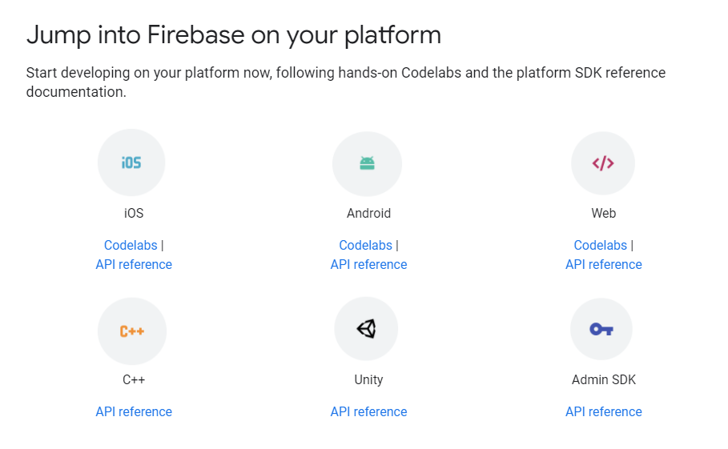
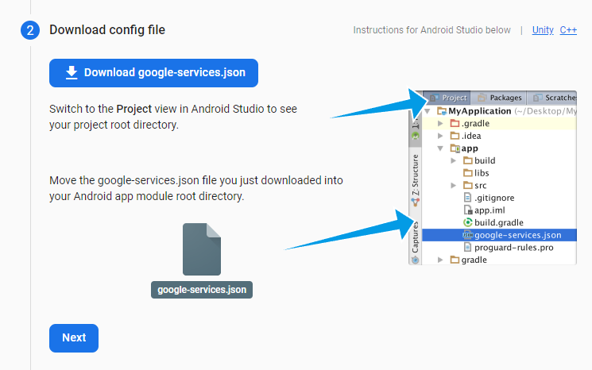
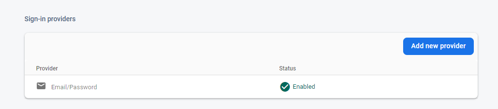
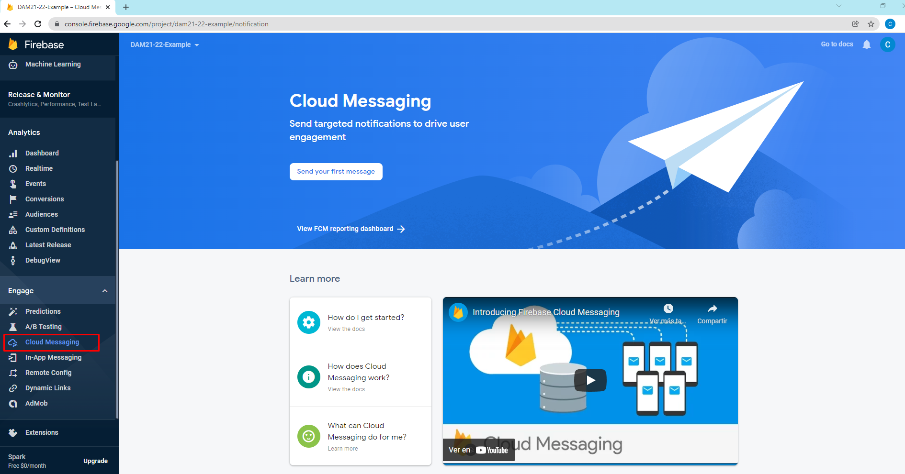
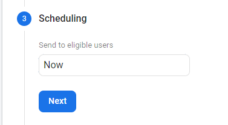
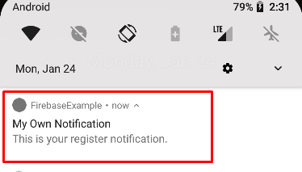
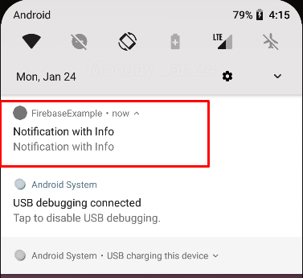

Firebase will help us to enhance the development of our Android, IOS, web, Unity games applications.
It appeared in 2014 and is owned by Google, since then it has been improving and adding new features.
This platform will provide us with different services, such as authentication (Google, Twitter, Apple, own users), analytics services, cloud storage, hosting, databases, etc.
Google firebase services
One of the main features of firebase is that initially everything is free, that is, we can use its services for free up to a certain limit.
This limit in general is quite high, and by the time we pass it, the application will surely start to do well and give us some benefit.
You can get more information about their prices here
Pricing
For example, we can see that in Authentication we can log 10,000 users per month. At the time we spend we will pay for use.
On the other hand, in the documentation section (https://firebase.google.com/docs/guides ),
which is very good, it gives us information on how to integrate it into the various platforms.

Accessing firebase
To access firebase, we will have to log in with our Google account and press go to console.
Once we are in the console we will create a new project and follow each of the instructions.
Add project
We give it a name to identify the project, if it already exists it will create another name for us. We press continue.
Project Name
On the next screen it tells us if we want to leave the analytics enabled, in this case we say yes and press continue.
Enable Google Analytics
On the next screen we create a new account for analytics. And we fill in the location data and accept the terms and conditions. Click on create project.
We wait a few seconds for our project to be created.
Creating Project
We press continue and we already have our console ready.
On the left, the main services that we will have to integrate one by one and on the central screen, our project.
Integrating Firebase to our App
Once our App is created in Android Studio, we go to the Firebase console and add an app to get started. In our case it will be an Android App.
Adding App to Firebase
As we did with the maps, it asks us for the name of the package, and the SHA-1.
Remember that you can get the SHA-1 using the signingReport gradle command
We fill in the data and press to register the App.
This will generate a JSON file called google-services.json that we must save inside the apps
folder of our project, as indicated in the instructions.
To make it better switch Android Studio to Project view. Once saved, click next.
 google-services.json
The next step is to add the firebase dependencies. For this we follow the instructions.
First in the project gradle we check that we have the Google() repository and add the dependency to google services.
Build.gradle Project
Now it's the turn of the App module's gradle:app file.
We must add the google services plugin and the dependencies that it indicates
plugins {
id 'com.android.application'
id 'kotlin-android'
id 'com.google.gms.google-services'
}
.....
dependencies {
........
// Import the Firebase BoM
implementation platform('com.google.firebase:firebase-bom:29.0.4')
// Add the dependency for the Firebase SDK for Google Analytics
// When using the BoM, don't specify versions in Firebase dependencies
implementation 'com.google.firebase:firebase-analytics-ktx'
// Add the dependencies for any other desired Firebase products
// https://firebase.google.com/docs/android/setup#available-libraries
}
Remember to hit sync.
Returning to the firebase console, we press next and it shows us links with examples and documentation and the button to return to the console.
According to the documentation, for the integration to be carried out, it is better to uninstall the app if we had it installed and reinstall it again.
Once we have the integration done, it should appear in our console. And if we go to the Analytics dashboard we will see the information that appears,
number of users, where they do it from, platform, etc...
We can also launch custom events for parts of our application, for example we are going to make it send us an event every time the Main activity is created.
//If we want to launch our own events to Google Analytics we can do it as follows
//According to Firebase, it can take up to 24 hours from integration for the first events to start appearing.
val analytics: FirebaseAnalytics = FirebaseAnalytics.getInstance(this)
val bundle=Bundle().apply {
putString("message", "Firebase integration completed")
}
analytics.logEvent("InitScreen",bundle)
Luego dentro de Analytics en la sección de eventos podemos ver estos eventos en detalle.
Autentication
Within the authentication service we can see that we have different options to do it, such as username and password, Google, Facebook, etc...
If we click on the Users tab, we will see the users that we have authenticated, in this case it is empty.
For reasons of time, we will only see two of them:
Email and password
Google
Email and Password
The first thing we will do is enable the email and password provider.
We enable it. We see that we also have the option to enable email without a password. We press save and we already have the creator provider.
 Email/Password provider
So far everything we have to do in the firebase console. Let's go back to Android Studio.
We add the dependency in Gradle:app if we haven't already done so.
To register we first get the FirebaseAuth instance with the FirebaseAuth.getInstance() method
Later with the instance we can call the method createUserWithEmailAndPassword(email:String, password:String) to which, as you can see, the email and password are passed.
FirebaseAuth.getInstance().createUserWithEmailAndPassword(
"carlos@gmail.com",
"123456" //Note that password needs at least 6 characters
)
In addition we can add some listener like for example addOnCompletListener, which will fire when the registration is finished.
It will return a Task . This has the isSuccessful property that informs us in a Boolean
if the registration has gone well.
The registry code would be as follows.
FirebaseAuth.getInstance().createUserWithEmailAndPassword(
"carlos@gmail.com",
"123456" //Note that password needs at least 6 characters
).addOnCompleteListener{
if(it.isSuccessful){ // Register completed ok
//do something
//we can't get the user and his email
Log.d(TAG, it.result?.user?.email ?: "")
}else{ //Something was wrong
//showError()
}
}
Once registered, we can see the access from the firebase console.
As you can see we can also add users from the firebase console.
Sign in
To access with an existing user, the procedure is very similar.
Now you just have to call the signInWithEmailAndPassword() method from the instance, which also receives two text strings, email and password.
FirebaseAuth.getInstance().signInWithEmailAndPassword(
"carlos@gmail.com",
"123456" //Note that password needs at least 6 characters
).addOnCompleteListener{
if(it.isSuccessful){ // Register completed ok
//do something
//we can't get the user and his email
Log.d(TAG, it.result?.user?.email ?: "")
}else{ //Something was wrong
//showError()
}
}
Using Google Account
To add access with Google, we must add a new Authentication Provider. Remember for this provider we require the SHA-1 in until now it was optional.
/figcaption>
Click on Google and give it to enable and save. Additionally we can add a support email.
So far everything we have to do in the firebase console. Let's go back to Android Studio.
This process is a bit more complicated than the previous one, but basically the steps to follow are:
First add the dependency in gradle:app
//Firebase google
implementation 'com.google.android.gms:play-services-auth:20.0.1'
Already in the code, we must create the Google configuration with the data we need from the Google user.
In this case, we must pass the client ID of our server to the requestIdToken method of the google-services.json file and ask for the email.
val googleConf = GoogleSignInOptions.Builder(GoogleSignInOptions.DEFAULT_SIGN_IN)
.requestIdToken(getString(R.string.default_web_client_id))
.requestEmail()
.build()
Obtain our Google client to log in to which we pass the previous configuration and context.
val googleClient = GoogleSignIn.getClient(this, googleConf)
We launch the activity to indicate with which account we want to access or create a new one.
This activity is already created, we simply get the intent from the Google Client and launch it.
val signInIntent = googleClient.signInIntent
launcher.launch(signInIntent)
We launch it with registerForActivityResult , since it remembers that it is precated. And we get the Google Account Activity result.
private val launcher = registerForActivityResult(ActivityResultContracts.StartActivityForResult()){ result ->
if (result.resultCode == Activity.RESULT_OK) {
//If the result was OK we have to sign in with those credentials
}
If the result has gone well, first we get the intent of the Google login activity.
val task = GoogleSignIn.getSignedInAccountFromIntent(result.data)
We get the account. Eye This operation can throw an ApiException, we must catch it in a try catch block
try{
val account = task.getResult(ApiException::class.java)
if(account!=null){
//Here we have a valid Google Account
}
}catch (apiException:ApiException){
//showError
}
With the account we obtain your credentials.
val credential = GoogleAuthProvider.getCredential(account.idToken, null)
And with firebase and these credentials we call the signInWithCredential(credential) method to sign in.
The rest is the same as validation via email/password. It would stay like this.
private val launcher = registerForActivityResult(ActivityResultContracts.StartActivityForResult()){ result ->
if (result.resultCode == Activity.RESULT_OK) {
val task = GoogleSignIn.getSignedInAccountFromIntent(result.data)
try{
val account = task.getResult(ApiException::class.java)
if(account!=null){
val credential = GoogleAuthProvider.getCredential(account.idToken, null)
FirebaseAuth.getInstance().signInWithCredential(credential).addOnCompleteListener{
if(it.isSuccessful){
//Here we have access with that account and we can't get some data such us email.
Log.d(TAG, account.email ?: "")
}else{
showError()
}
}
}
}catch (apiException:ApiException){
//showError()
}
}
}
Now we can access with a Google account.
We check that we have accessed with that account in the firebase console.
Exercise: Add some more authentication method, with Github or Facebook. In their respective pages you have more information about the authentication API.
Push Notifications
Primero accedemos a la consola de firebase y accedemos al servicio de notificaciones que tiene por nombre Cloud Messaging.
 Cloud Messaging
Configurando la App.
Enviando el primer mensaje.
Send your first message
Rellenamos los campos de la notificación. Pulsamos siguiente.
En el punto dos seleccionamos los destinatarios. Seleccionamos todos los dispositivos android que tengan la apliacación.
El siguiente punto es indicar cuando queremos enviarla, elegimos ahora, pero podríamos programar una fecha y una hora.

Dejamos eventos de conversión y otras opciones en blanco, ya que son configuraciones más avanzadas. Finalmente podemos guardarlo o revisarlo.
Pulsamos en revisar.
Y pulsamos sobre Publish.
And we see that the notification arrives on our device. If we click on it, it automatically opens our App.
We can also change the notification icon for it in the AndroidManifest.xml we add the following lines. This is optional.
<!-- Set custom default icon. This is used when no icon is set for incoming notification messages.
See README(https://goo.gl/l4GJaQ) for more. -->
<meta-data
android:name="com.google.firebase.messaging.default_notification_icon"
android:resource="@drawable/ic_stat_ic_notification" />
<!-- Set color used with incoming notification messages. This is used when no color is set for the incoming
notification message. See README(https://goo.gl/6BKBk7) for more. -->
<meta-data
android:name="com.google.firebase.messaging.default_notification_color"
android:resource="@color/colorAccent" />
Sending Unicast Notifications
If we want to send a notification to a single device, what we must do is the following.
First we must obtain the user token (unique for each device) to send.
FirebaseMessaging.getInstance().token.addOnCompleteListener(OnCompleteListener { task ->
if (!task.isSuccessful) {
Log.w(TAG, "Fetching FCM registration token failed", task.exception)
return@OnCompleteListener
}
// Get new FCM registration token
val token = task.result
// Log and toast
val msg = "${getString(R.string.msg_token_fmt)} $token"
Log.d(TAG, msg)
//Toast.makeText(baseContext, msg, Toast.LENGTH_SHORT).show()
})
We can copy it from the one we have sent to the console.
With this token we can send the notification to this device. We could, for example, save the Token in a database and relate it to the user and each time we want to send a notification, retrieve the Token.
We are now going to send a new notification from the firebase console. We select new notification.
We follow the same steps as before but at point 1 we choose to send test messages.
And in the Token field we add the Token that we have previously obtained. And click on Test.
We already have the exclusive notification for this user (device).

Sending Multicast
If instead of wanting to send to all devices or to just one, we use the topics (Topics).
To subscribe a device to a topic is very simple, we just have to execute the following command.
And to send them is very simple. We first start up two devices that subscribe to the same topic.
We go to the Firebase console and send the same message, but in step 2 (Target) we select the Topic.
We see that it already recognizes it for us because when launching the application we have registered it.
We review the message.
We launched it and it reaches us on both devices.
Foreground Notifications
The notifications only arrive if it is in the background, to handle these notifications we will do it from the service that we created in the first point.
We must override the onMessageReceived() operation.
For example we will launch a Toast with the title of the message.
Notice that we launch it from a coroutine with Dispatcher.Main .
Send information in the notification
To do this, we launch the notification as we have done so far, but we stop at the last option, Additional options.
We see that we can write a key-value pair, we put for example the url of the notes.
Now we retrieve it from the notification.
//Receive info from notification
val url = intent.getStringExtra("url")
url?.let{
println("We've received this url $it in the notification")
}
Nos llega la notificación

And by clicking on it we retrieve the information.
So far what we will see regarding notifications, but remember that the normal thing is to send notifications from a server or through firebase functions.
There is documentation on the firebase website to integrate notifications into our server, as well as the use of firebase functions.